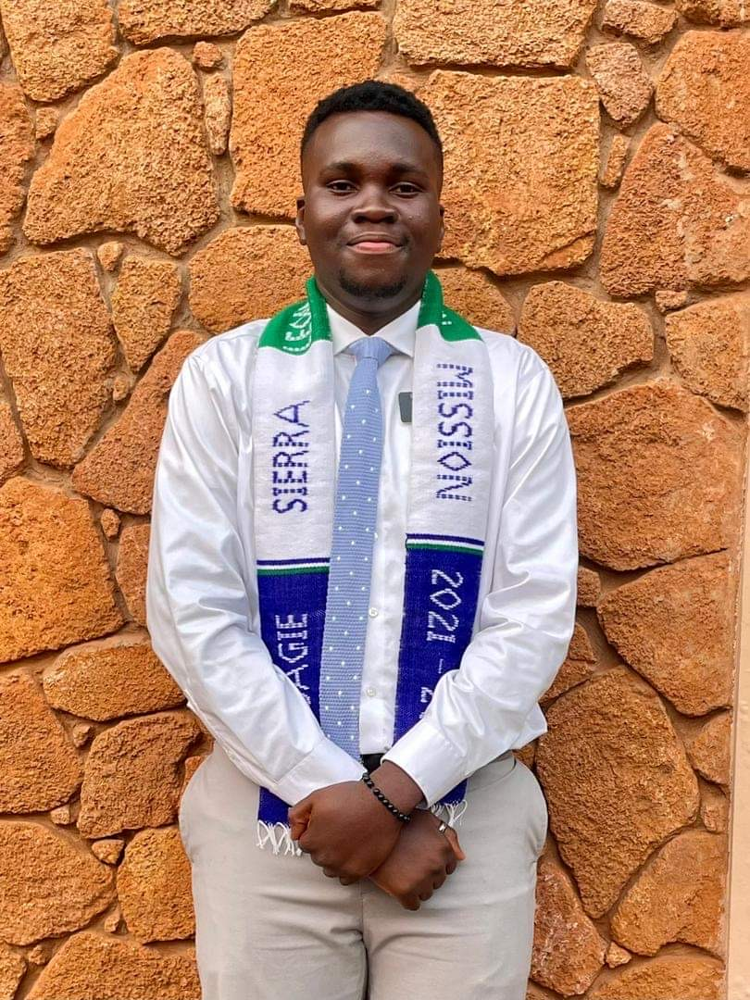

JOHN OSAGIE | WDD 130
I am Osagie, a web developer from Lagos, Nigeria, weaves his magic in the digital realm. Lines of code are my tools, transforming ideas into vibrant websites that come alive on the internet. But when i am offline, i trade my keyboard for a basketball, my fingers dancing across the court with the passion the bring to code. After a satisfying win, there's nothing better than unwinding with a plate of steaming rice, it is favorite Nigerian comfort food. Coding, basketball, and rice - these are the threads that weave thetapestry of my life in Lagos.Thanks